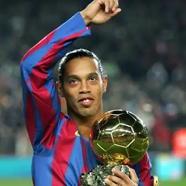
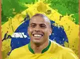
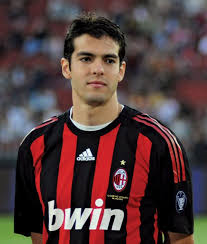
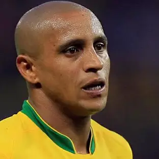

Igrači i legende
„Joga Bonito“ je stil igre koji ističe ljepotu, tehniku i kreativnost na terenu. Mnogi legendarni igrači svojim vještinama i stilom odražavaju ovaj filozofski pristup nogometu, ostavljajući traga u povijesti sporta i inspirirajući generacije mladih talenata.
Među najpoznatijim su Ronaldinho, Maradona, Neymar, Ronaldo (brazilski), Kaka i Roberto Carlos. Ovi igrači su poznati po svojoj tehničkoj briljantnosti, kreativnosti i sposobnosti da igraju s lakoćom i stilom koji odražavaju duh „Joga Bonito“.
- Ronaldinho
Ronaldinho je bio sinonim za ljepotu i umjetnost nogometa. Sa svojim magičnim driblingima, spektakularnim potezima i osmijehom na terenu, predstavljao je pravi izraz „Joga Bonito“. Njegova igra ostaje inspiracija mnogima da igraju s radošću i samopouzdanjem.
 - Maradona
Maradona je bio majstor s loptom, poznat po svojim nevjerovatnim driblingima i sposobnosti da preokrene tok utakmice. Njegova kreativnost i strast prema igri čine ga jednim od najvećih u povijesti nogometa.
.png)
- Neymar
Neymar, kao moderni brazilski majstor, nastavlja tradiciju ljepote i umjetnosti u nogometu. Njegovi trikovi, dribling i sposobnost da zabavlja publiku čine ga jednim od najpoznatijih i najutjecajnijih igrača današnjice.

- Ronaldo (brazilski)
Ronaldo, poznat i kao „O Fenomeno“, bio je jedan od najbržih, najtežih i najefikasnijih napadača u povijesti. Njegove akrobacije i tehnika odražavaju duh „Joga Bonito“ i ostaju zapamćeni kao vrhunac nogometne umjetnosti.
 - Kaka
Kaka je briljantni veznjak koji je svojom tehnikom, vizijom i kreacijom na terenu utjelovio stil ljepote i kreativnosti. Njegove genijalne asistencije i golovi ostali su inspiracija mnogima.
 - Roberto Carlos
Roberto Carlos je poznat po svojim nevjerovatnim slobodnim udarcima i brzim pokretima. Njegova energija i stil igre odražavaju ljepotu i dinamiku „Joga Bonito“.
